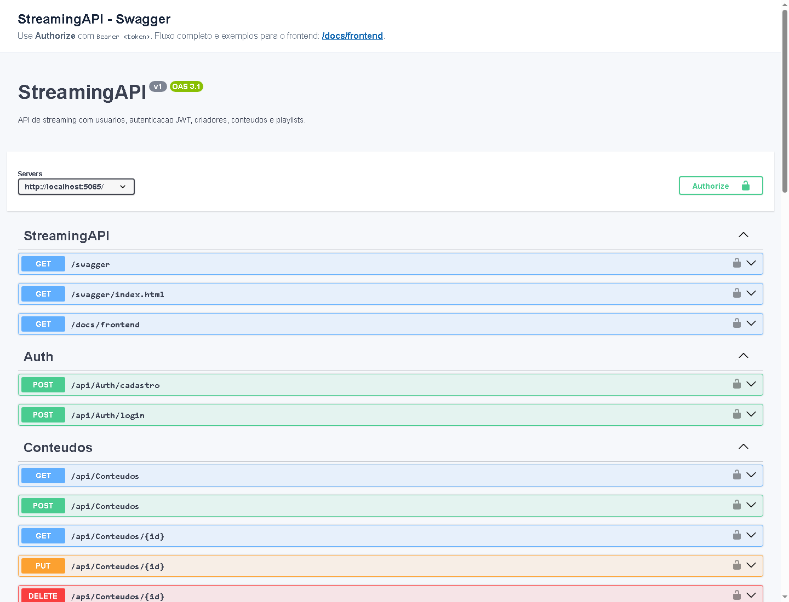
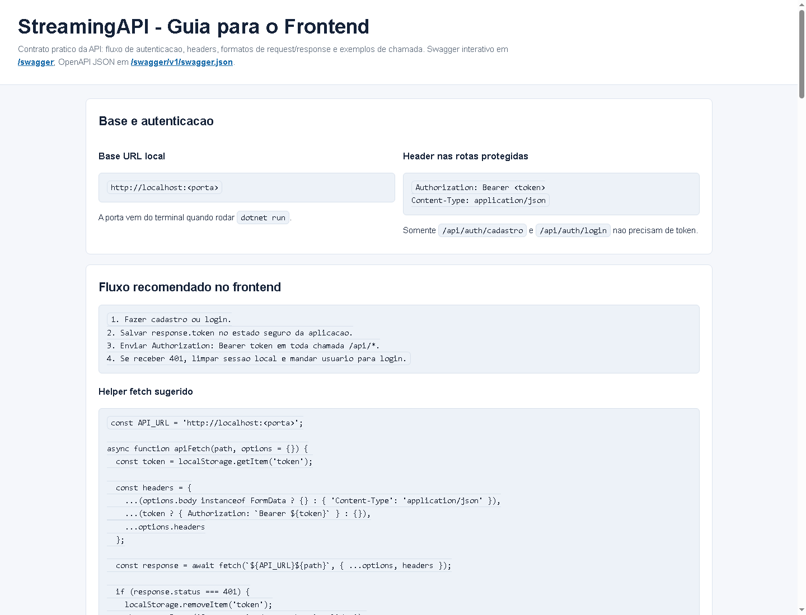
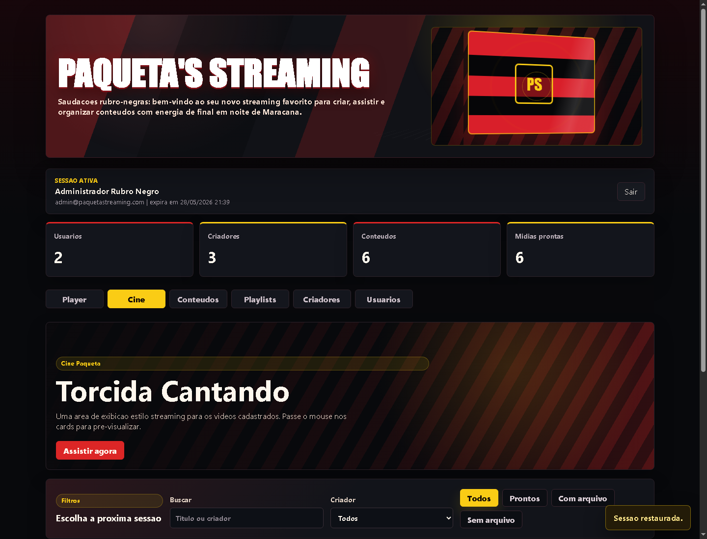
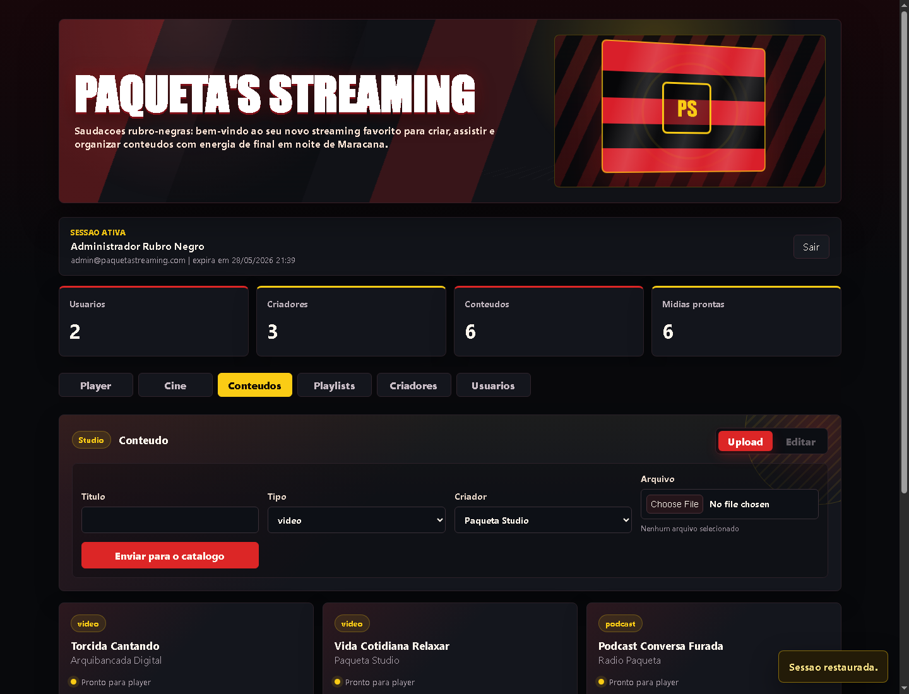
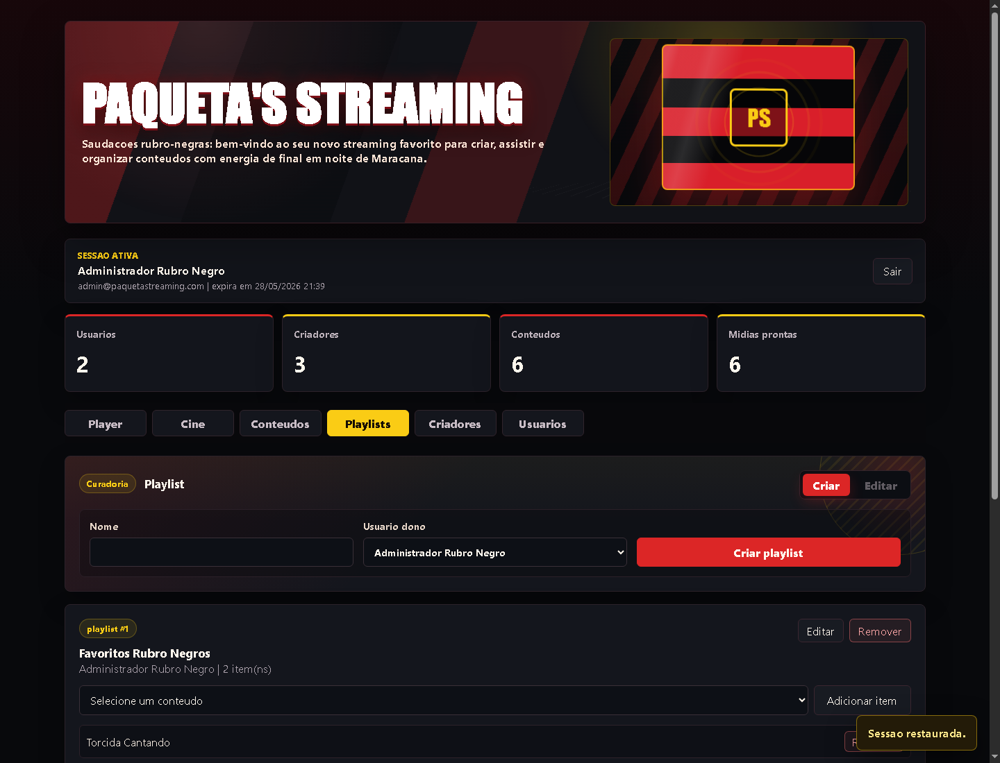
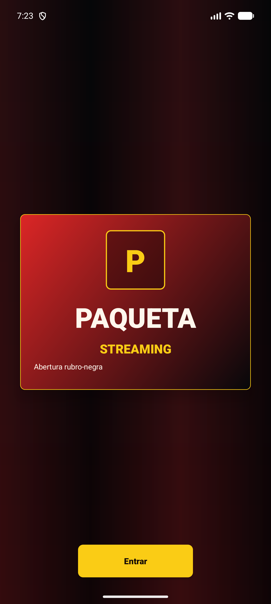
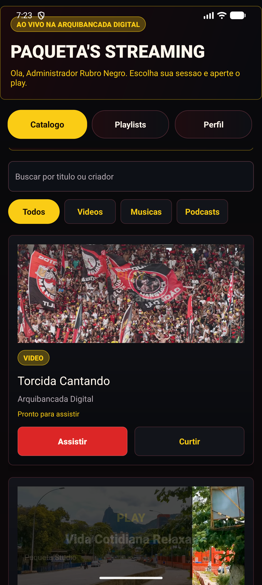
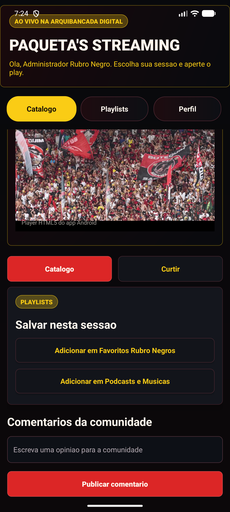
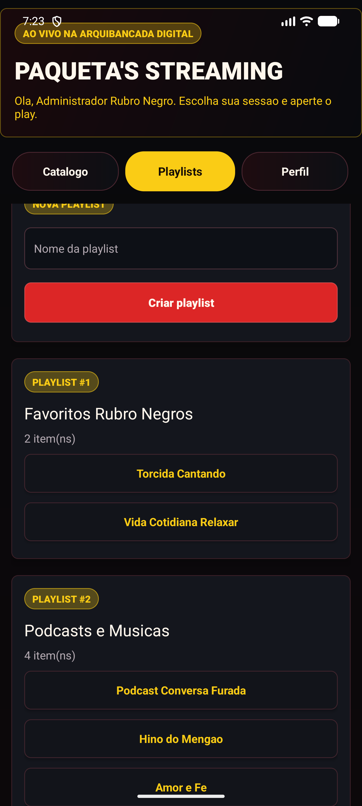
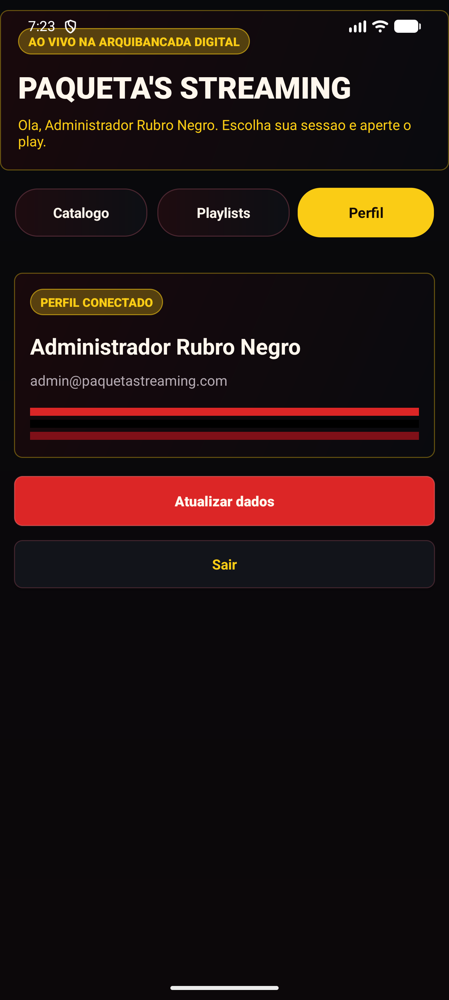

Autenticacao
ObrigatorioApos cadastro ou login, o frontend salva o token e envia Authorization: Bearer nas rotas protegidas. Em caso de 401, a sessao local deve ser limpa.
Universidade Paulista - UNIP EaD
Projeto Integrado Multidisciplinar
Curso Superior de Tecnologia em
Analise e Desenvolvimento de Sistemas
NOME DO ALUNO - RA
Plataforma web em C#, Web API ASP.NET Core e aplicativo Android Java
Cidade
2026
NOME DO ALUNO - RA
Plataforma web em C#, Web API ASP.NET Core e aplicativo Android Java
Cidade
2026
Este trabalho apresenta o desenvolvimento de um sistema de streaming de conteudo multimidia, composto por uma Web API em ASP.NET Core, um painel web em C# para gerenciamento e um aplicativo Android desenvolvido em Java para o usuario final. O sistema foi estruturado para permitir cadastro e autenticacao de usuarios com token JWT, cadastro de criadores, upload de videos, musicas e podcasts, organizacao de playlists e reproducao de conteudos por meio de endpoints preparados para streaming. A proposta atende ao tema do PIM VIII ao integrar conceitos de Programacao Orientada a Objetos II, Desenvolvimento de Software para a Internet e Topicos Especiais de Programacao Orientada a Objetos. No backend, foram implementadas entidades, DTOs, controllers, repositorios e persistencia com Entity Framework Core e SQLite. No frontend web, foi desenvolvido um painel visual para operacoes administrativas e de criadores de conteudo. No aplicativo Android, foram implementadas telas de login, catalogo, player, playlists e interacoes sociais por comentarios e curtidas, preservando a experiencia de consumo do usuario final. O projeto tambem contempla evidencias visuais, organizacao academica conforme o manual do PIM e espacos destinados a referencias do repositorio GitHub.
Palavras-chave: Streaming. ASP.NET Core. Android Java. Web API. JWT.
This work presents the development of a multimedia streaming system composed of an ASP.NET Core Web API, a C# web management panel, and an Android application developed in Java for end users. The system was designed to support user registration and JWT authentication, creator management, upload of videos, songs and podcasts, playlist organization, and media playback through streaming-oriented endpoints. The proposal addresses the PIM VIII theme by integrating concepts from Object-Oriented Programming II, Internet Software Development, and Special Topics in Object-Oriented Programming. In the backend, entities, DTOs, controllers, repositories, and persistence with Entity Framework Core and SQLite were implemented. The web frontend provides a visual panel for administrative and creator operations. The Android application provides login, catalog, player, playlists, and social interactions through comments and likes, preserving the final user's media consumption experience. The project also includes visual evidence, academic organization according to the PIM manual, and placeholders for GitHub repository references.
Keywords: Streaming. ASP.NET Core. Android Java. Web API. JWT.
Observacao: a paginacao final deve ser conferida apos exportar o HTML para PDF, pois o navegador pode ajustar quebras de pagina conforme escala de impressao.
Conforme o manual do PIM VIII, este documento contempla os elementos academicos obrigatorios e as entregas tecnicas solicitadas para o tema de sistema de streaming de conteudo multimidia.
| Exigencia do manual | Onde aparece neste documento | Status |
|---|---|---|
| Capa, Resumo, Abstract e Sumario | Elementos pre-textuais do relatorio | Atendido |
| Introducao, Desenvolvimento e Conclusao | Secoes 1, 2 e 3 | Atendido |
| Referencias em padrao academico | Secao 4 | Atendido |
| Classes de entidades do diagrama | Secao 2.3 | Atendido |
| Web API em C# com CRUD, autenticacao e autorizacao | Secao 2.4 | Atendido |
| Documentacao Swagger | Figura 1 e tabela de endpoints | Atendido |
| Interface grafica para criadores/gestao | Secoes 2.5 e 2.5.1 | Atendido no painel web em C# |
| Aplicativo Android Java para usuario final | Secoes 2.6 e 2.6.1 | Atendido |
| Capturas de tela das interfaces | Figuras 1 a 14 | Atendido |
O presente Projeto Integrado Multidisciplinar tem como objetivo documentar e demonstrar a construcao de um sistema de streaming de conteudo multimidia, alinhado ao tema proposto para o PIM VIII. A solucao desenvolvida contempla recursos para disponibilizacao e consumo de videos, musicas e podcasts em uma plataforma digital, permitindo que criadores cadastrem conteudos e que usuarios finais naveguem, reproduzam e organizem midias em playlists.
A aplicacao foi dividida em tres partes principais. A primeira parte e uma Web API em ASP.NET Core, responsavel por expor os endpoints de autenticacao, usuarios, criadores, conteudos, playlists e itens de playlist. A segunda parte e um painel web desenvolvido em C#, voltado ao gerenciamento do sistema e as operacoes relacionadas aos criadores de conteudo. A terceira parte e um aplicativo Android em Java, voltado ao usuario final, com interface de catalogo, player multimidia, playlists, historico e interacoes.
A metodologia adotada consistiu em analisar os requisitos do manual, modelar as entidades do dominio, implementar a persistencia de dados, criar endpoints RESTful protegidos por token JWT e desenvolver interfaces capazes de consumir a API de forma realista. Tambem foram geradas evidencias por meio de capturas de tela das principais funcionalidades, alem de uma carga inicial no banco de dados utilizando arquivos de midia existentes na pasta do projeto.
O sistema proposto simula uma plataforma de streaming de conteudo multimidia, em que criadores podem publicar videos, musicas e podcasts, enquanto usuarios podem consumir esses materiais em um ambiente visual inspirado em servicos modernos de streaming. A identidade visual utilizada no prototipo possui tema rubro-negro, com cores escuras, destaques em vermelho e elementos de destaque que reforcam a proposta de uma plataforma de entretenimento.
A solucao busca atender as funcionalidades-chave descritas no manual: gerenciamento de usuarios, controle de autenticacao e autorizacao, cadastro de criadores, cadastro e upload de conteudos, gestao de playlists e consumo de conteudo por aplicativo mobile. A API centraliza as regras de acesso aos dados e as interfaces web e Android funcionam como clientes independentes que consomem os mesmos endpoints.
| Modulo | Objetivo | Tecnologia |
|---|---|---|
| StreamingAPI | Expor autenticao, CRUDs, upload e streaming de midias. | ASP.NET Core, C#, EF Core, SQLite, JWT |
| ContentCreatorApp | Gerenciar usuarios, criadores, conteudos e playlists em ambiente web. | C#, Blazor/Web |
| AndroidUserApp | Permitir navegacao, consumo de conteudo, playlists e interacao do usuario final. | Java, Android SDK |
A API foi desenvolvida em ASP.NET Core com Entity Framework Core para persistencia relacional em SQLite. A autenticacao utiliza JWT, permitindo que o usuario faca cadastro ou login e receba um token para acessar rotas protegidas. As senhas sao armazenadas por meio de hash, evitando a gravacao de senha em texto puro.
O painel web utiliza C# e comunica-se com a API por requisicoes HTTP. Sua funcao e apoiar a gestao dos dados do sistema, incluindo cadastro de criadores, upload de conteudo, edicao de registros e organizacao das playlists. O aplicativo Android foi implementado em Java, com interface voltada ao usuario final, contendo fluxo de abertura, autenticacao, catalogo, player e interacao por comentarios.
| Area | Ferramenta/tecnologia | Aplicacao no projeto |
|---|---|---|
| Backend | ASP.NET Core Web API | Criação de endpoints RESTful para os recursos do sistema. |
| Persistencia | Entity Framework Core e SQLite | Mapeamento das entidades e gravacao local dos dados. |
| Seguranca | JWT e PasswordHasher | Autenticacao por token e armazenamento seguro de senhas. |
| Web | C# / Blazor | Painel para criadores e administradores. |
| Mobile | Java / Android SDK | Aplicativo para navegacao e consumo de conteudo. |
A modelagem do sistema foi baseada nas entidades indicadas no manual: Usuario, Playlist, Conteudo, Criador e ItemPlaylist. O Usuario representa a pessoa cadastrada na plataforma. A Playlist representa uma colecao de conteudos pertencente a um usuario. O Conteudo representa uma midia publicada, como video, musica ou podcast. O Criador representa o responsavel pela producao ou publicacao do conteudo. O ItemPlaylist e a tabela associativa que conecta playlists e conteudos.
Essa estrutura permite que cada usuario possua diversas playlists e que cada playlist contenha diversos conteudos. O relacionamento entre Playlist e Conteudo ocorre por meio de ItemPlaylist, preservando a organizacao relacional proposta no diagrama do manual.
A Web API foi construida para concentrar o acesso aos dados e oferecer uma camada de comunicacao entre o banco de dados e as interfaces cliente. O cadastro e o login retornam um token JWT; as demais rotas de API utilizam esse token no cabecalho Authorization. A API tambem disponibiliza documentacao por Swagger e um guia de contrato para frontend, permitindo que outro desenvolvedor entenda rapidamente como consumir os recursos.


Todas as rotas de autenticacao sao publicas. As demais rotas iniciadas por /api/* exigem o cabecalho Authorization: Bearer <token>. A excecao fica para arquivos em /Media/* e para o stream de video, que precisam ser acessiveis pelo player.
| Recurso | Metodo e rota | Regra / uso no sistema |
|---|---|---|
| Auth | POST /api/auth/cadastro POST /api/auth/login |
Rotas publicas. Validam nome, e-mail e senha, retornando usuario, token JWT e data de expiracao. |
| Usuarios | GET /api/usuarios GET /api/usuarios/{id} POST /api/usuarios PUT /api/usuarios/{id} DELETE /api/usuarios/{id} |
CRUD protegido por token. Nao retorna senha nem hash. A criacao exige nome, e-mail e senha. |
| Criadores | GET /api/criadores GET /api/criadores/{id} POST /api/criadores PUT /api/criadores/{id} DELETE /api/criadores/{id} |
CRUD protegido por token. Fornece os responsaveis associados aos conteudos cadastrados. |
| Conteudos | GET /api/conteudos GET /api/conteudos/{id} POST /api/conteudos PUT /api/conteudos/{id} DELETE /api/conteudos/{id} GET /api/conteudos/{id}/reproducao GET /api/conteudos/{id}/stream HEAD /api/conteudos/{id}/stream |
CRUD protegido por token. O cadastro usa multipart/form-data para upload. Reproducao valida arquivo, tipo, tamanho e disponibilidade. Stream atende o player com suporte a Range. |
| Playlists | GET /api/playlists GET /api/playlists/{id} GET /api/playlists/usuario/{usuarioId} POST /api/playlists PUT /api/playlists/{id} DELETE /api/playlists/{id} POST /api/playlists/{playlistId}/itens DELETE /api/playlists/itens/{itemId} |
CRUD protegido por token. Relaciona usuario, playlist e conteudos por meio da entidade ItemPlaylist. |
Apos cadastro ou login, o frontend salva o token e envia Authorization: Bearer nas rotas protegidas. Em caso de 401, a sessao local deve ser limpa.
Campos obrigatorios, relacionamentos inexistentes e dados invalidos retornam 400. E-mail repetido retorna 409.
O endpoint de conteudos recebe titulo, tipo, criadorId e arquivo opcional. Com FormData, o navegador define o boundary do multipart.
O endpoint /stream pode ser usado direto no elemento de video e aceita Range, recurso necessario para avancar ou voltar a reproducao.
Quadro 1 - Trecho representativo do fluxo de autenticacao
POST /api/auth/login
{
"email": "admin@paquetastreaming.com",
"senha": "Senha123"
}
Resposta:
{
"usuario": { "id": 1, "nome": "Administrador Rubro Negro" },
"token": "eyJhbGciOi...",
"expiraEm": "2026-05-28T..."
}
A rota de upload de conteudo recebe dados em multipart/form-data. Quando o arquivo e um video, a API disponibiliza uma URL de stream com suporte a Range, permitindo que o player avance e retroceda o video sem precisar baixar o arquivo inteiro.
O frontend web foi desenvolvido como painel para gerenciamento da plataforma. Ele permite autenticar usuarios, visualizar dados do sistema, criar criadores, cadastrar conteudos com upload, organizar playlists e acessar as funcionalidades administrativas. A interface utiliza tema escuro, elementos em vermelho e dourado e componentes voltados a operacao do sistema.

O print com erro de validacao foi substituido por capturas limpas. A mensagem de erro 400 exibida anteriormente ocorreu quando o formulario foi enviado sem e-mail e senha validos; isso e esperado pela API, mas nao deve aparecer como evidencia principal do sistema funcionando.
O painel web funciona como interface de apoio para criadores e administradores, sendo adequado para operacoes de cadastro, upload e organizacao do acervo. Por estar integrado a mesma API utilizada pelo aplicativo Android, as informacoes cadastradas no painel podem ser consumidas no aplicativo mobile.
| Aba | Funcao | Endpoints consumidos |
|---|---|---|
| Player | Reproduz video, musica ou podcast e mostra historico local vinculado ao usuario logado. | GET /api/conteudos/{id}/reproducao GET /api/conteudos/{id}/stream |
| Cine | Lista videos em formato de vitrine, com filtros por texto, criador e disponibilidade. | GET /api/conteudos GET /api/criadores |
| Conteudos | Cria conteudos com upload, edita metadados e remove registros. | POST /api/conteudos PUT /api/conteudos/{id} DELETE /api/conteudos/{id} |
| Playlists | Cria playlists, edita dados e adiciona conteudos por ItemPlaylist. | GET /api/playlists POST /api/playlists POST /api/playlists/{id}/itens |
| Criadores | Cadastro, edicao e exclusao dos criadores responsaveis pelos conteudos. | GET/POST/PUT/DELETE /api/criadores |
| Usuarios | Gerenciamento dos usuarios cadastrados, sem expor senha ou hash. | GET/POST/PUT/DELETE /api/usuarios |
Quadro 2 - Contrato de requisicao utilizado pelo frontend
async function apiFetch(path, options = {}) {
const token = localStorage.getItem("token");
const isFormData = options.body instanceof FormData;
const headers = {
...(isFormData ? {} : { "Content-Type": "application/json" }),
...(token ? { Authorization: `Bearer ${token}` } : {}),
...options.headers
};
const response = await fetch(`${API_URL}${path}`, { ...options, headers });
if (response.status === 401) {
localStorage.removeItem("token");
throw new Error("Sessao expirada.");
}
return response.status === 204 ? null : response.json();
}
As figuras a seguir demonstram as principais abas do painel web apos autenticacao. Todas consomem a mesma API e compartilham o estado da sessao do usuario autenticado.






O aplicativo Android foi desenvolvido em Java e representa a interface do usuario final. Ele possui tela de abertura com identidade visual, fluxo de login e cadastro, catalogo de conteudos, player multimidia, playlists e perfil. A proposta atende ao requisito de permitir navegacao, consumo de conteudo e interacao dentro da plataforma.


O player do Android foi ajustado para reproduzir videos, musicas e podcasts usando as URLs retornadas pela API. Para videos, o aplicativo utiliza um componente WebView com player HTML5, evitando falhas de compatibilidade observadas no componente nativo. O historico de consumo e separado por usuario, de modo que um login diferente nao reutiliza o historico visualizado por outro usuario na mesma maquina.



Quadro 3 - Configuracao de acesso do Android a API local
private static final String BASE_URL = "http://localhost:5065"; // No emulador Android foi utilizado adb reverse: // adb reverse tcp:5065 tcp:5065 // Assim, localhost do emulador encaminha para a API do computador.
O banco de dados SQLite foi populado com usuarios, criadores, playlists e arquivos de midia existentes na pasta raiz do projeto. Essa carga inicial permite demonstrar o funcionamento do sistema imediatamente apos a execucao da API, facilitando a validacao das telas web e Android.
| Tipo | Registro | Observacao |
|---|---|---|
| Usuario | Administrador Rubro Negro | Email: admin@paquetastreaming.com |
| Usuario | Torcedor Assinante | Email: torcedor@paquetastreaming.com |
| Criador | Paqueta Studio | Criador utilizado na carga de videos. |
| Criador | Arquibancada Digital | Criador utilizado na carga de conteudos musicais. |
| Criador | Radio Paqueta | Criador utilizado na carga de podcast. |
| Arquivo de midia | Tipo cadastrado | Origem |
|---|---|---|
| torcida cantando.mp4 | video | C:\projeto |
| vida cotidiana relaxar.mp4 | video | C:\projeto |
| Podcast Conversa furada.mp4 | podcast | C:\projeto |
| HINO DO MENGAO.mp3 | musica | C:\projeto |
| Amor e fe.mp3 | musica | C:\projeto |
| Magica Calcinha Preta.mp3 | musica | C:\projeto |
As evidencias do projeto foram organizadas por modulo. As capturas de tela demonstram o funcionamento das principais interfaces e auxiliam a comprovacao visual do sistema para a entrega academica. Os espacos abaixo devem ser substituidos pelos links reais do GitHub apos a publicacao do repositorio.
Repositorio principal: https://github.com/USUARIO/REPOSITORIO
API: https://github.com/USUARIO/REPOSITORIO/tree/main/backend/StreamingAPI
Frontend web: https://github.com/USUARIO/REPOSITORIO/tree/main/app/ContentCreatorApp
Aplicativo Android: https://github.com/USUARIO/REPOSITORIO/tree/main/app/ContentCreatorApp/AndroidUserApp
Relatorio HTML: https://github.com/USUARIO/REPOSITORIO/tree/main/app/ContentCreatorApp/RelatorioPIM
Espaco para inserir prints adicionais do Swagger, do banco de dados e de trechos do codigo no GitHub, caso sejam exigidos na versao final do documento.
Quadro 4 - Estrutura resumida do projeto
C:\projeto
backend\StreamingAPI
Controllers
Data
DTOs
Models
Repositories
Services
app\ContentCreatorApp
Components
AndroidUserApp
RelatorioPIM
Manual.pdf
*.mp3 / *.mp4
O desenvolvimento do sistema de streaming de conteudo multimidia permitiu aplicar, de forma integrada, conhecimentos de programacao orientada a objetos, desenvolvimento web e desenvolvimento mobile. A Web API centralizou a logica de dados e seguranca, enquanto o frontend web e o aplicativo Android demonstraram formas distintas de consumir os mesmos recursos.
A implementacao de autenticacao por JWT, senha com hash, CRUDs, upload de arquivos, playlists e player de streaming contribuiu para aproximar o prototipo de um sistema real. O painel web atende ao uso administrativo e de criadores, enquanto o aplicativo Android atende ao usuario final, permitindo navegacao, reproducao e interacao.
Como resultado, o projeto cumpre a proposta do PIM VIII ao apresentar uma solucao funcional, documentada e organizada, com evidencias visuais e estrutura adequada para evolucao futura. Entre as melhorias possiveis estao a publicacao em ambiente cloud, criacao de testes automatizados mais completos, integracao com servico externo de armazenamento de midias e ampliacao dos recursos sociais da plataforma.
ASSOCIAÇÃO BRASILEIRA DE NORMAS TÉCNICAS. NBR 14724: informacao e documentacao: trabalhos academicos: apresentacao. Rio de Janeiro: ABNT.
GOOGLE. Android Developers Documentation. Disponivel em: https://developer.android.com/docs. Acesso em: 28 maio 2026.
MICROSOFT. ASP.NET Core documentation. Disponivel em: https://learn.microsoft.com/aspnet/core. Acesso em: 28 maio 2026.
MICROSOFT. Entity Framework Core documentation. Disponivel em: https://learn.microsoft.com/ef/core. Acesso em: 28 maio 2026.
MICROSOFT. JSON Web Token authentication in ASP.NET Core. Disponivel em: https://learn.microsoft.com/aspnet/core/security/authentication. Acesso em: 28 maio 2026.
UNIVERSIDADE PAULISTA. Manual do PIM VIII: Curso Superior de Tecnologia em Analise e Desenvolvimento de Sistemas. Sao Paulo: UNIP EaD.